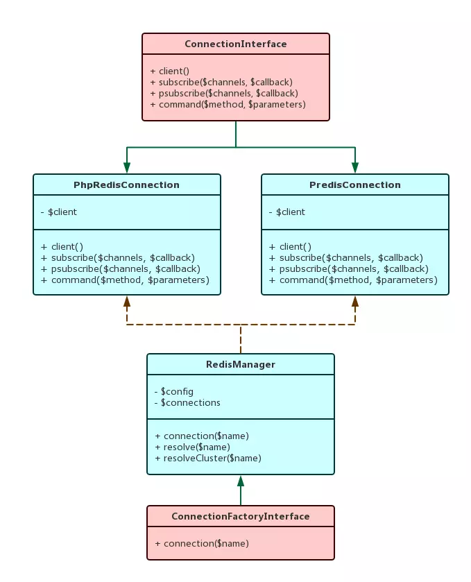

1.简单工厂抽象层次低，所以在对其进行扩展（增加对象逻辑关系）时，需要增加或者重复书写的代码就比较多，这对于经常增加新的对象类型来说会带来不少麻烦。不过，也下是因为抽象层次低，我们在代码里就不需要实现过多针对抽象的代码，能够减少这部分的代码量和处理逻辑
2.Laravel的Redis模块，使用了工厂模式

3.在控制反转中，程序控制者拥有对依赖管理的能力，所以可以很方便的为对象准备所需的依赖

4.容器也可以称为依赖注入容器（Dependency Injection Container），能够完成对象实例化和依赖注入的过程。而在这个过程中，被创建的对象本身，却并不知道容器的存在，也不知道自己正受到容器的管理
5.在Laravel中，将不同的模块以服务（Service）的形式进行封装，所以Laravel的容器，就称为服务容器（Service Container）
- 在\Illuminate\Container\Container中，通过resolveDependencids来分析和查找依赖参数
- 通过resolve()和call()方法实现构造器注入和调用注入
- 对于基础类型的参数，Laravel会从传入参数和参数默认值中进行选择，而对于需要的对象，Laravel会继续从容器中查找
- 这样，就形成了完整的通过容器，实现依赖处理逻辑
6.数据库的查询构造器是建造模式的典型应用
7.Laravel中的驱动（Driver）对应策略模式，如Queue模块

8.Laravel中的集合类（Connection）实现了迭代器模式

9.PHP5.5以上的生成器语法
- 通过yield来返回数据
- 可以直接在方法中使用
function xrange($start, $limit, $step = 1) { for ($i = $start; $i <= $limit; $i += $step) { yield $i; } }
$numbers = []; foreach (range(1, 9, 2) as $number) { $numbers[] = $number; }
10.观察者模式我们通过让对象主动将自己的状态更新通知观察者，而不是让观察者进行持续的监听
- 常用的实现：发布订阅、模型视图、事件监听
- 事件模式中，Illuminate\Events\Dispatcher是Illuminate\Contracts\Events\Dispatcher的实现，其担任的就是事件的调度和分发作用


11.代理模式
- php中动态代理直接使用__call()
- Laravel中Redis的实现

12.责任链与管道
- 管道对象并不是用来管理请求如何通过中间件或者其他类似的责任链的，管道对象只是帮助我们去制造一个责任链，最终，我们不过是把对象传递到管道所制造的责任链中而已
13.装饰器模式
- 通过Illuminate\Log\Writer来为Monolog的Monolog\Logger对象增加新性能